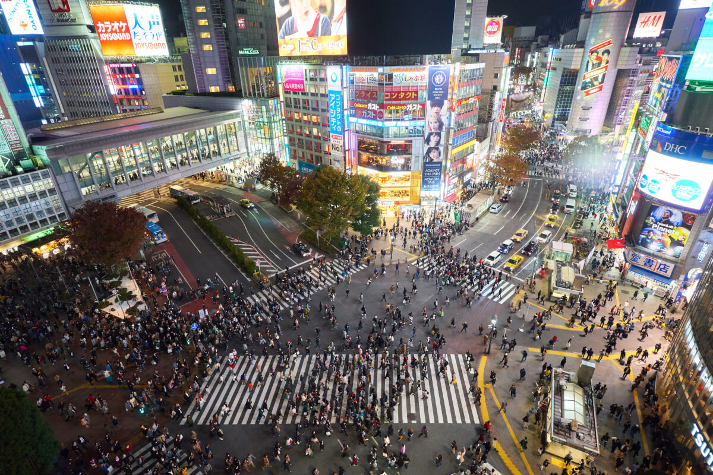

PLACE I WANT TO VISIT IN JAPAN

Located in the Shibuya area in Tokyo, Shibuya Crossing is widely known as the busiest crossing in the world. It consists of 5 crossroads that allow pedestrians to come and go in every direction of the crossing. At the busiest time of the day, more than 3,000 people are estimated to cross it at the same time without bumping into each other, which creates an incredible view! Shibuya Scramble Square is a giant shopping complex that features Shibuya Sky, a popular observation deck offering 360-degree views of the iconic crossing as well as the Shibuya district full of skyscrapers!